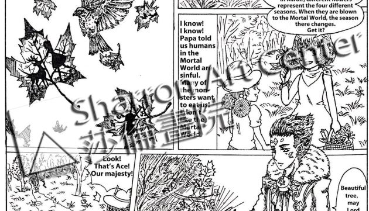

如何挑选申请大学的艺术作品集（二）
我们一直强调从小帮助学生建立他们的独特个人特性，并展露潜质！这两点正好可以借助艺术作品集，与论文相结合，完整呈现给大学招生官。
绘画课的中间休息当口，来自深圳的Jessica突然冲进来：＂刘老师，你能不能帮我看看这篇论文这样构思可以吗？＂尾随她进来的是申请大学专家－X博士。每个周末，博士都与一部分莎伦学生，一对一地在画院的会议室闭门指导大学申请论文的撰写。从学生的学校功课成绩、修课、课外活动、暑期加强计划、与学校沟通⋯到论文切入点、如何撰写、并且一字一句的分析及修改⋯细节繁多。
Jessica急匆匆地解释她对某所大学的论文构想，想以她创作的一幅画做为引子进入主题，另外再配上两幅相应的绘画。＂另外两幅画，我会用不一样的绘画材料去画⋯＂她说。
＂重点不在于变换绘画材料，重点在于每幅画都应该是代表一个不同的角度，去加强阐述文章的主题⋯＂我这样向她要求。
博士在旁边帮忙解释及强调主题的选择。我认可Jessica对主题的选择，超过一般学生对事物直接、片面的理解。但是主题比较深刻时，容易想太多，不容易抓住要点，让人看不明白。反而是比较直接的、较浅薄的主题讨好人。
一个好的主题，面临如何归纳、组织、清晰、抓住要点等高难度挑战。奥运会跳水比赛获得高成绩，不仅仅是运动员入水完美，几乎没有溅起什么水花，还包括运动员在高空中是否有高难度动作，这一系列动作是否做得完美无瑕疵。所以有一个好的论文主题是值得花时间去研究、推敲、修改的。
最后我建议Jessica保留主题，但更改题目。一个好题目会加强突出重点，而不是涵盖性过大。博士赞同我的以上两项提议。之前她已经给Jessica很多建议了。我们并就每位学生的具体情况，共同商讨各人应该申请的学校及种种策略。
我与博士的工作互动一向很愉快，＂她是个有理念的专家。＂这是我对她最简洁的归纳，包涵很多的欣赏。
我非仅仅是一位绘画与设计指导员，艺术技艺对我而言太容易了，所以自然在教育理念上思考得更多。深入了解学生的个性、特点，帮助他们挖掘潜质，助于对学生的整体计划，仍至细节建议。如何切入绘画、论文、整体包装要点是我们的看家本领。
事实上，我们是以写作的方式在引导学生画画，所以最后学生申请大学，在论文写作等等问题上，会有很多突破。
在莎伦画院学习绘画一定会牵涉到联想，联想一定又与写作有关。申请大学递交艺术作品集，艺术作品的内容也一定会涉及到论文写作问题。许多莎伦学生申请大学并不准备主修艺术，但大多数学生的申请大学论文一定会论述绘画对他们的人生影响。因为加上我们在绘画教学中对人生的指点，使学生在不知不觉中把绘画艺术融入他们的生命中，成为最深切、最深刻的体验与感悟，自然地成为他们的特色。
独特的思考、视觉角度、切入点，不仅仅成就好论文，更重要的是结合杰出的艺术作品集，双向强烈视觉，冲击招生官的感官，影响他的判断，欣赏及肯定申请者的独特性，和由此展露的申请者的内在潜质。
很荣幸的，许多学生在申请大学论文中，不约而同的写刘老师－我，做为一个老师能够在学生们的心目中有如此深刻的感受，影响他们的一生，令我觉得，我们所遇到的困难周折都不重要了。
绘画与论文的描述、阐述对象，都必须是作者有强烈感受的对象，否则作品一定缺乏生命力。就象我在文章中提到、写到的学生一样，对他们，我必有深刻感觉。(2015)